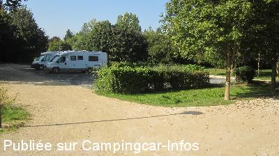
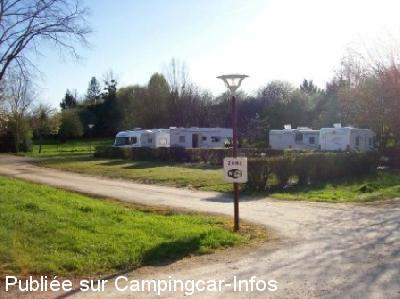
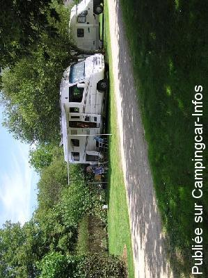
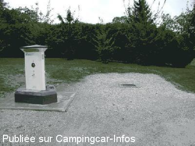

ASN = Aire de services avec stationnement nuit possible de :
NIEUIL L'ESPOIR
(N° 704)
Accès/adresse :
Allée du Champ de Foire
86340 NIEUIL L'ESPOIR
86340 NIEUIL L'ESPOIR
Latitude : (Nord) 46.48505° Décimaux ou 46° 29′ 6′′
Longitude : (Est) 0.45485° Décimaux ou 0° 27′ 17′′
Tarif : 2015
Stationnement gratuit
Services : 2 €
Jetons chez les commerçants
Type de borne : EURO-RELAIS
Services :


Tous commerces
Autres informations :
Ouvert toute l'année
8 emplacements éclairés sur graviers et partiellement ombragés
Tél : +33(0)549 426 504

Le 04/10/2014 par cloan

Le 08/05/2013 par jean pierre

Le 20/07/2007 par

Le 18/01/2005 par
de
nevis 76
le 04/05/2016 :
Petite aire agreable.Une dizaine de places non delimitees.Tout pres des commerces.Seul inconvenient trop pres de la route et beaucoup de camions passent la nuit et tot le matin(en plus certains se font un plaisir de klaxonner).Cette aire reste neanmois agreable avec son parc et ses ballades a faire.
Petite aire agreable.Une dizaine de places non delimitees.Tout pres des commerces.Seul inconvenient trop pres de la route et beaucoup de camions passent la nuit et tot le matin(en plus certains se font un plaisir de klaxonner).Cette aire reste neanmois agreable avec son parc et ses ballades a faire.
de
Franck56
le 31/08/2015 :
Nous avons également adoré cet etape et notre jogging sur le sentier bordé de champs de tournesol au delà de l etang cité.
Boulangerie a proximité.
Un grand merci à la commune !
Nous avons également adoré cet etape et notre jogging sur le sentier bordé de champs de tournesol au delà de l etang cité.
Boulangerie a proximité.
Un grand merci à la commune !
de
armend1942
le 29/08/2015 :
Aire parfaite avec réserve sur la qualité de vidange eaux grises. Après réfection des sols 10 camping-car peuvent trouver place à l'aise. Une aire de stationnement très vaste est contigüe. Elle bénéficie d'un étang de pèche (3 j/sem) d'une base nautique, d'un arboretum de jeux pour enfants Tous commerces à proximité.
Un Oscar à cette municipalité accueillante
Aire parfaite avec réserve sur la qualité de vidange eaux grises. Après réfection des sols 10 camping-car peuvent trouver place à l'aise. Une aire de stationnement très vaste est contigüe. Elle bénéficie d'un étang de pèche (3 j/sem) d'une base nautique, d'un arboretum de jeux pour enfants Tous commerces à proximité.
Un Oscar à cette municipalité accueillante
de
clau
le 01/04/2014 :
Passé le 31/03/2014. Le terrain a été réaménagé en dur, ce qui est super car très défoncé quand c'était de l'herbe malgré les bandes de roulement.
Nuit calme mais trafic des camions dès 6h.
Passé le 31/03/2014. Le terrain a été réaménagé en dur, ce qui est super car très défoncé quand c'était de l'herbe malgré les bandes de roulement.
Nuit calme mais trafic des camions dès 6h.
de
isatis
le 26/02/2014 :
§ Bjr.
L'aire est désormais en graviers tassés, mais toujours aussi agréable. Prix inchangé pour les jetons achetés chez les commerçants, en l'occurence la boulangerie à 150m.
§ Bjr.
L'aire est désormais en graviers tassés, mais toujours aussi agréable. Prix inchangé pour les jetons achetés chez les commerçants, en l'occurence la boulangerie à 150m.
de
kerdudu
le 14/11/2013 :
Très belle aire.
Pour les services, il suffit de faire 150m. pour avoir des jetons à la supérette et 400m.à la boulangerie.
Cela ne me paraît pas insurmontable.
La randonnée indiquée sur le panneau près de l'aire CC.
est intéressante. Elle part de l'aire CC et pour avoir le topo, il suffit de photographier le parcours avec son smartphone.
Très belle aire.
Pour les services, il suffit de faire 150m. pour avoir des jetons à la supérette et 400m.à la boulangerie.
Cela ne me paraît pas insurmontable.
La randonnée indiquée sur le panneau près de l'aire CC.
est intéressante. Elle part de l'aire CC et pour avoir le topo, il suffit de photographier le parcours avec son smartphone.
de
jami26
le 07/09/2013 :
Je ne peux que confirmer les commentaires précédents: très belle aire; agréable et calme.
Le seul petit bémol, ce sont les jetons à aller chercher les commerçants, bon nombre de CC sont repartis sans faire le plein d'eau.
Je ne peux que confirmer les commentaires précédents: très belle aire; agréable et calme.
Le seul petit bémol, ce sont les jetons à aller chercher les commerçants, bon nombre de CC sont repartis sans faire le plein d'eau.
de
jean pierre
le 08/05/2013 :
14/4/2013
une étape agréable , calme ,gratuite , au bord de petit étangs ou des chemins de promenade sont aménagés , prés de la petite ville , merci a Niel L'espoir .
attention par temps de pluie ,les caillebotis en plastique incrustés dans l'herbe sont limite suffisants .
14/4/2013
une étape agréable , calme ,gratuite , au bord de petit étangs ou des chemins de promenade sont aménagés , prés de la petite ville , merci a Niel L'espoir .
attention par temps de pluie ,les caillebotis en plastique incrustés dans l'herbe sont limite suffisants .
de
Lathiere Bernard
le 09/06/2012 :
Confirmation !!! c'est une aire superbe--tranquille -agréable avec le plan d'eau à côté et une très belle promenade. Les commerces sont très proches--- merci à la municipalité.. le golf de Mignaloux -Beauvoir est à 5 minutes (pour les amateurs).
Confirmation !!! c'est une aire superbe--tranquille -agréable avec le plan d'eau à côté et une très belle promenade. Les commerces sont très proches--- merci à la municipalité.. le golf de Mignaloux -Beauvoir est à 5 minutes (pour les amateurs).
de
franck du 31
le 23/11/2011 :
Tres belle aire a cote d un lac avec borne d eau et vidange.Pour les jetons chez les commerçants du village. Merci a la municipalites.
Tres belle aire a cote d un lac avec borne d eau et vidange.Pour les jetons chez les commerçants du village. Merci a la municipalites.
de
Xtian74
le 22/11/2010 :
Aire Aménagée pour 8 CC sur herbe avec caillebotis, éclairée, partiellement ombragée. Quelques emplacements supplémentaires hors les emplacements prévus.
Nous avons passé dans la solitude une nuit tranquille...
Aire Aménagée pour 8 CC sur herbe avec caillebotis, éclairée, partiellement ombragée. Quelques emplacements supplémentaires hors les emplacements prévus.
Nous avons passé dans la solitude une nuit tranquille...
de
Xtian74
le 30/08/2008 :
Les commentaires de mes prédécesseurs ne sont pas exagérés, une aire intégrée à une base de loisirs, donc dans la verdure et pratiquement dans le village.
Nuit calme en compagnie d'une dizaine de CC.
Les commentaires de mes prédécesseurs ne sont pas exagérés, une aire intégrée à une base de loisirs, donc dans la verdure et pratiquement dans le village.
Nuit calme en compagnie d'une dizaine de CC.
de
Marc. Orain
le 27/07/2007 :
Nous y étions déjà passés en 2006, cette aire est un modèle du genre, toujours aussi bien entretenue, idéalement située proche du centre bourg et du parc de loisirs, félicitations à la municipalité de cette petite ville proche de poitiers, à citer en exemple.
Nous y étions déjà passés en 2006, cette aire est un modèle du genre, toujours aussi bien entretenue, idéalement située proche du centre bourg et du parc de loisirs, félicitations à la municipalité de cette petite ville proche de poitiers, à citer en exemple.
de
Marc FERRARI
le 09/06/2006 :
Super ! Jeux pour les enfants, très calme, commerçants sympathiques, petit plan d'eau très bien aménagé. Très bonne halte
Super ! Jeux pour les enfants, très calme, commerçants sympathiques, petit plan d'eau très bien aménagé. Très bonne halte